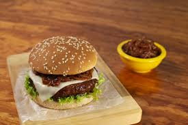
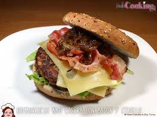

Hamburguesas Tradicionales

Una hamburguesa es un sándwich hecho a base de carne molida o de origen vegetal, aglutinada en forma de filete cocinado a la parrilla o a la plancha, aunque también puede freírse u hornearse. Fuera del ámbito de habla hispana, es más común encontrar la denominación estadounidense burger, acortamiento de hamburger.
Hamburguesas Veganas
La hamburguesa vegetal, vegetariana o vegana es una variante de la hamburguesa tradicional que evita la carne picada para emplear productos vegetales idóneos para los vegetarianos o veganos. Se emplean en su elaboración productos como tofú, seitán o lentejas entre otros.
Hamburguesas BBQ


Por supuesto, para que la hamburguesa BBQ sea un éxito total, asegúrate de servirla con un buen queso de lonchas estilo holandés, unas lonchas de bacon y por supuesto, con cebolla caramelizada que le aporta el toque dulce y gourmet que marca una gran diferencia. Y si las acompañas de patatas gajo especiadas y ketchup, el triunfo está asegurado.